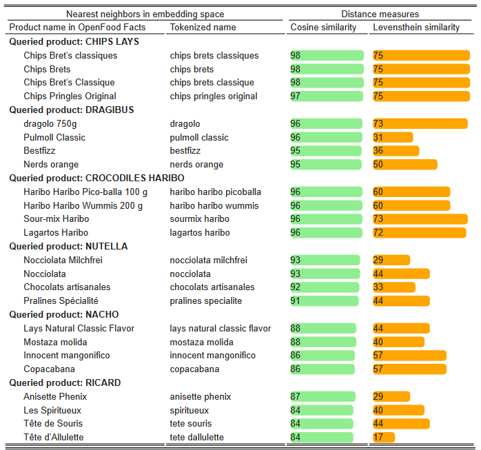

Données textuelles et non structurées
Les données textuelles sont aujourd’hui parmi les types de données les plus prometteurs pour la statistique publique et l’un des champs les plus actifs de la recherche en data science. Pour cause, de plus en plus de services existent sur le web qui conduisent à la collecte de données textuelles. En outre, des nouvelles méthodes pour collecter et traiter ces traces numériques particulières ont été développées dans les dernières années.
Une partie des méthodes d’analyse qui appartiennent à la palette des compétences des data scientists spécialistes du traitement de données textuelles sont en réalité assez anciennes. Par exemple, la distance de Levensthein a été proposée pour la première fois en 1965, l’ancêtre des réseaux de neurone actuels est le perceptron qui date de 1957, etc.1 Néanmoins, le fait que certaines entreprises du net basent leur business model sur le traitement et la valorisation de la donnée textuelle, notamment Google, Facebook et Twitter, a amené à renouveler le domaine.
La statistique publique s’appuie également sur la collecte et le traitement de données textuelles. Les collectes de données officielles ne demandent pas exclusivement d’informations sous le forme de texte. Les premières informations demandées sont généralement un état civil, une adresse, etc. C’est ensuite, en fonction du thème de l’enquête, que d’autres informations textuelles seront collectées: un nom d’entreprise, un titre de profession, etc. Les données administratives elles-aussi comportent souvent des informations textuelles. Ces données défient l’analyse statistique car cette dernière, qui vise à détecter des grandes structures à partir d’observations multiples, doit s’adapter à la différence des données textuelles: le langage est un champ où certaines des notions usuelles de la statistique (distance, similarité notamment) doivent être revues.
Ce chapitre propose un panorama très incomplet de l’apport des données non structurées, principalement textuelles, pour la statistique et l’analyse de données. Nous évoquerons plusieurs sources ou méthodes de collecte. Nous ferons quelques détours par des exemples pour aller plus loin.
Webscraping
Présentation
Le webscraping est une méthode de collecte de données qui repose sur le moissonnage d’objets de grande dimension (des pages web) afin d’en extraire des informations ponctuelles (du texte, des nombres…). Elle désigne les techniques d’extraction du contenu des sites Internet. C’est une pratique très utile pour toute personne souhaitant travailler sur des informations disponibles en ligne, mais n’existant pas forcément sous la forme de fichiers exportables.
Enjeux pour la statistique publique
Le webscraping présente un certain nombre d’enjeux en termes de légalité, qui ne seront pas enseignés dans ce cours. En particulier, la Commission nationale de l’informatique et des libertés (CNIL) a publié en 2020 de nouvelles directives sur le webscraping reprécisant qu’aucune donnée ne peut être réutilisée à l’insu de la personne à laquelle elle appartient.
Le webscraping est un domaine où la reproductibilité est compliquée à mettre en oeuvre. Une page web évolue régulièrement et d’une page web à l’autre, la structure peut être très différente ce qui rend certains codes difficilement généralisables. Par conséquent, la meilleure manière d’avoir un programme fonctionnel est de comprendre la structure d’une page web et dissocier les éléments exportables à d’autres cas d’usages des requêtes ad hoc.
Un code qui fonctionne aujourd’hui peut ainsi très bien ne plus fonctionner au bout de quelques semaines. Il apparaît préférable de privilégier les API qui sont un accès en apparence plus compliqué mais en fait plus fiable à moyen terme. Cette difficulté à construire une extraction de données pérenne par webscraping une illustration du principe “there is no free lunch”. La donnée est au cœur du business model de nombreux acteurs, il est donc logique qu’ils essaient de restreindre la moisson de leurs données.
Les APIs sont un mode d’accès de plus en plus généralisé à des données. Cela permet un lien direct entre fournisseurs et utilisateurs de données, un peu sous la forme d’un contrat. Si les données sont ouvertes avec restrictions, on utilise des clés d’authentification. Avec les API, on structure sa demande de données sous forme de requête paramétrée (source désirée, nombre de lignes, champs…) et le fournisseur de données y répond, généralement sous la forme d’un résultat au format JSON. Python et JavaScript sont deux outils très populaires pour récupérer de la donnée selon cette méthode. Pour plus de détails, vous pouvez explorer le chapitre sur les API dans le cours de Python de l’ENSAE.
On n’est pas à l’abri de mauvaises surprises avec les APIs (indisponibilité, limite atteinte de requêtes…) mais cela permet un lien plus direct avec la dernière donnée publiée par un producteur. L’avantage de l’API est qu’il s’agit d’un service du fournisseur de données, qui en tant que service va amener un producteur à essayer de répondre à une demande dans la mesure du possible. Le webscraping étant un mode d’accès à la donnée plus opportuniste, où le réel objectif du producteur de données n’est pas de fournir de la donnée mais une page web, il n’y a aucune garantie de service ou de continuité.
Exemples dans la statistique publique
Implémentations
Python est le langage le plus utilisé par les scrappers. BeautifulSoup sera suffisant quand vous voudrez travailler sur des pages HTML statiques. Dès que les informations que vous recherchez sont générées via l’exécution de scripts Javascript, il vous faudra passer par des outils comme Selenium. De même, si vous ne connaissez pas l’URL, il faudra passer par un framework comme Scrapy, qui passe facilement d’une page à une autre (“crawl”). Scrapy est plus complexe à manipuler que BeautifulSoup : si vous voulez plus de détails, rendez-vous sur la page du tutoriel Scrapy. Pour plus de détails, voir le TP sur le webscraping en 2e année de l’ENSAE.
Les utilisateurs de R privilégieront httr and rvest qui sont les packages les plus utilisés. Il est intéressant d’accorder de l’attention à polite. Ce package vise à récupérer des données en suivant les recommandations de bonnes pratiques sur le sujet, notamment de respecter les instructions dans robots.txt (“The three pillars of a polite session are seeking permission, taking slowly and never asking twice”).
Réseaux sociaux
Les réseaux sociaux sont l’une des sources textuelles les plus communes. C’est leur usage à des fins commerciales qui a amené les entreprises du net à renouveler le champ de l’analyse textuelles qui bénéficie au-delà de leur champ d’origine.
On rentre un peu plus en détail sur ces données dans le chapitre Nowcasting.
Les modèles de langage
Un modèle de langage est un modèle statistique qui modélise la distribution de séquences de mots, plus généralement de séquences de symboles discrets (lettres, phonèmes, mots), dans une langue naturelle. Un des objectifs de ces modèles est de pouvoir transformer des objets (textes) situés dans un espace d’origine de très grande dimension, qui de plus utilise des éléments contextuels, en informations situés dans un espace de dimension réduite. Il s’agit ainsi de transformer des éléments d’un corpus, par exemple des mots, en vecteurs multidimensionnels sur lequel on peut ensuite par exemple appliquer des opérations arithmétiques. Un modèle de langage peut par exemple servir à prédire le mot suivant une séquence de mots ou la similarité de sens entre deux phrases.
Du bag of words aux modèles de langage
L’objectif du Natural Langage Processing (NLP) est de transformer une information de très haute dimension (une langue est un objet éminemment complexe) en information à dimension plus limitée qui peut être exploitée par un ordinateur.
La première approche pour entrer dans l’analyse d’un texte est généralement l’approche bag of words ou topic modeling. Dans la première, il s’agit de formaliser un texte sous forme d’un ensemble de mots où on va piocher plus ou moins fréquemment dans un sac de mots possibles. Dans la seconde, il s’agit de modéliser le processus de choix de mots en deux étapes (modèle de mélange): d’abord un choix de thème puis, au sein de ce thème, un choix de mots plus ou moins fréquents selon le thème.
Dans ces deux approches, l’objet central est la matrice document-terme. Elle formalise les fréquences d’occurrence de mots dans des textes ou des thèmes. Néanmoins, il s’agit d’une matrice très creuse: même un texte au vocabulaire très riche n’explore qu’une petite partie du dictionnaire des mots possibles.
L’idée derrière les embeddings est de proposer une information plus condensée qui permet néanmoins de capturer les grandes structures d’un texte. Il s’agit par exemple de résumer l’ensemble d’un corpus en un nombre relativement restreint de dimensions. Ces dimensions ne sont pas prédéterminées mais plutôt inférées par un modèle qui essaie de trouver la meilleure partition des dimensions pour rapprocher les termes équivalents. Chacune de ces dimensions va représenter un facteur latent, c’est à dire une variable inobservée, de la même manière que les composantes principales produites par une ACP. Techniquement, au lieu de représenter les documents par des vecteurs sparse de très grande dimension (la taille du vocabulaire) comme on l’a fait jusqu’à présent, on va les représenter par des vecteurs denses (continus) de dimension réduite (en général, autour de 100-300).
Intérêt des modèles de langage
Par exemple, un humain sait qu’un document contenant le mot “Roi” et un autre document contenant le mot “Reine” ont beaucoup de chance d’aborder des sujets semblables.

word2vec.
Pourtant, une vectorisation de type comptage ou TF-IDF ne permet pas de saisir cette similarité : le calcul d’une mesure de similarité (norme euclidienne ou similarité cosinus) entre les deux vecteurs donnera une valeur très faible, puisque les mots utilisés sont différents.
A l’inverse, un modèle word2vec (voir Figure 1) bien entraîné va capter qu’il existe un facteur latent de type “royauté”, et la similarité entre les vecteurs associés aux deux mots sera forte.
La magie va même plus loin : le modèle captera aussi qu’il existe un facteur latent de type “genre”, et va permettre de construire un espace sémantique dans lequel les relations arithmétiques entre vecteurs ont du sens ; par exemple (voir Figure 2) :
\[\text{king} - \text{man} + \text{woman} ≈ \text{queen}\]
Chaque mot est représenté par un vecteur de taille fixe (comprenant \(n\) nombres), de façon à ce que deux mots dont le sens est proche possèdent des représentations numériques proches. Ainsi les mots « chat » et « chaton » devraient avoir des vecteurs de plongement assez similaires, eux-mêmes également assez proches de celui du mot « chien » et plus éloignés de la représentation du mot « maison ».
Comment ces modèles sont-ils entraînés ? Via une tâche de prédiction résolue par un réseau de neurones simple. L’idée fondamentale est que la signification d’un mot se comprend en regardant les mots qui apparaissent fréquemment dans son voisinage. Pour un mot donné, on va donc essayer de prédire les mots qui apparaissent dans une fenêtre autour du mot cible.
En répétant cette tâche de nombreuses fois et sur un corpus suffisamment varié, on obtient finalement des embeddings pour chaque mot du vocabulaire, qui présentent les propriétés discutées précédemment.

Les modèles de langage aujourd’hui
La méthode de construction d’un plongement lexical présentée ci-dessus est celle de l’algorithme Word2Vec. Il s’agit d’un modèle open-source développé par une équipe de Google en 2013. Word2Vec a été le pionnier en termes de modèles de plongement lexical.
Le modèle GloVe constitue un autre exemple (Pennington, Socher, and Manning 2014). Développé en 2014 à Stanford, ce modèle ne repose pas sur des réseaux de neurones mais sur la construction d’une grande matrice de co-occurrences de mots. Pour chaque mot, il s’agit de calculer les fréquences d’apparition des autres mots dans une fenêtre de taille fixe autour de lui. La matrice de co-occurrences obtenue est ensuite factorisée par une décomposition en valeurs singulières. Il est également possible de produire des plongements de mots à partir du modèle de langage BERT, développé par Google en 2019, dont il existe des déclinaisons dans différentes langues, notamment en Français (les modèles CamemBERT ou FlauBERT).
Enfin, le modèle FastText, développé en 2016 par une équipe de Facebook, fonctionne de façon similaire à Word2Vec mais se distingue particulièrement sur deux points :
- En plus des mots eux-mêmes, le modèle apprend des représentations pour les n-grams de caractères (sous-séquences de caractères de taille \(n\), par exemple « tar », « art » et « rte » sont les trigrammes du mot « tarte »), ce qui le rend notamment robuste aux variations d’orthographe ;
- Le modèle a été optimisé pour que son entraînement soit particulièrement rapide.
Le modèle GPT-3 (acronyme de Generative Pre-trained Transformer 3) a aujourd’hui le vent en poupe. Celui-ci a été développé par la société OpenAI et rendu public en 2020 (Brown et al. 2020). GPT-3 est le plus gros modèle de langage jamais entraîné avec 175 milliards de paramètres. Il sert de brique de base à plusieurs applications utilisant l’analyse textuelle pour synthétiser, à partir d’une instruction, des éléments importants et proposer un texte cohérent. Github Copilot l’utilise pour transformer une instruction en proposition de code, à partir d’un grand corpus de code open source. Algolia l’utilise pour transformer une instruction en mots clés de recherche afin d’améliorer la pertinence des résultats.
En ce moment, le champ du prompt engineering est en effervescence. Les modèles de langage comme GPT-3 permettent en effet d’extraire les éléments qui permettent de mieux discriminer les thèmes d’un texte.
Utilisation dans un processus de créatoin de contenu créatif
La publication par l’organisation Open AI de son modèle de génération de contenu créatif Dall-E-2 (un jeu de mot mélangeant Dali et Wall-E) a créé un bruit inédit dans le monde de la data-science. Un compte Twitter (Weird Dall-E Mini Generations) propose de nombreuses générations de contenu drôles ou incongrues. Le bloggeur tech Casey Newton a pu parler d’une révolution créative dans le monde de l’IA.
La Figure 3 montre un exemple d’image générée par DALL-E-2.

Les modèles générateurs d’image DallE et Stable Diffusion peuvent, schématiquement, être décomposés en deux niveaux de réseaux de neurones:
- le contenu de la phrase est analysé par un modèle de langage comme
GPT-3; - les éléments importants de la phrase (recontextualisés) sont ensuite transformés en image à partir de modèles entraînés à reconnaître des images.

Stable Diffusion est une version plus accessible que DALL-E pour les utilisateurs de Python.

Si vous êtes intéressés par ce type de modèle, vous pouvez tester les exemples du cours de Python de l’ENSAE. Vous pouvez tester “Chuck Norris fighting against Zeus on Mount Olympus in an epic Mortal Kombat scene” pour générer une image comme celle-ci dessous ou chercher à obtenir l’image de votre choix:

Modèles de langage dans la statistique publique
L’analyse textuelle dans la statistique publique intervient principalement à deux niveaux:
- pour apparier des sources à partir de champs textuels qui ne sont pas nécessairement identiques ;
- pour catégoriser des données dans une nomenclature normalisée à partir de champs libres.
Catégorisation
A l’Insee, plusieurs modèles de classification de libellés textuels dans des nomenclatures reposent sur l’algorithme de plongement lexical FastText. Les derniers mis en oeuvre sont les suivants:
- catégorisation des professions dans la nomenclature des PCS ;
- catégorisation des entreprises dans la nomenclature d’activité APE ;
- catégorisation des produits dans la nomenclature des COICOP.
Les deux premiers devraient servir prochainement à la production de statistiques officielles. Le troisième est une expérimentation encore en cours.
Appariements
